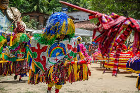
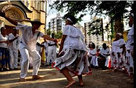

Galeria Visual
Esta galeria apresenta imagens que ilustram as heranças culturais africanas no Brasil, incluindo símbolos Adinkra em portões, manifestações culturais como o maracatu e a culinária afro-brasileira.

